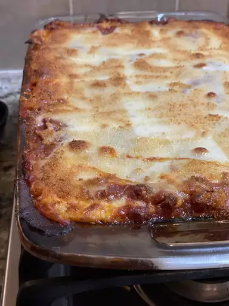

When John Chandler submitted this lasagna recipe to Allrecipes more than 20 years ago,
he had no idea how successful it would become. One of our top-performing recipes of all time,
World's Best Lasagna racks up more than 7 million views per year and has ranked among the most
popular lasagna recipes on the internet for two decades. Unfortunately, John unexpectedly passed
away at 53 years old — read all about his life and legacy here.